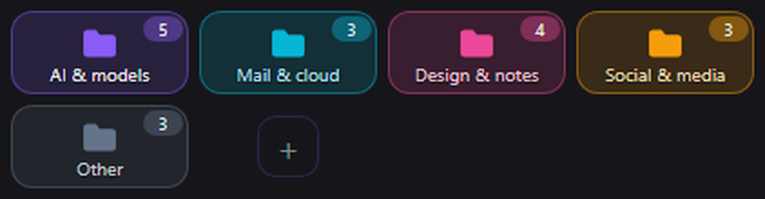
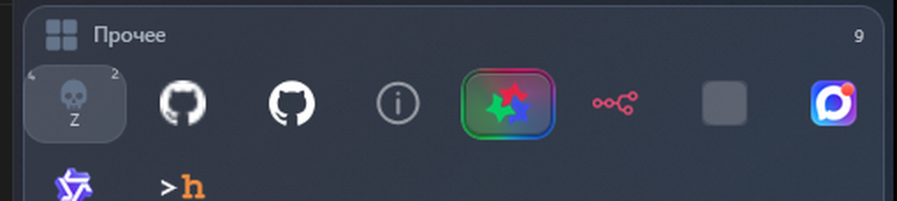
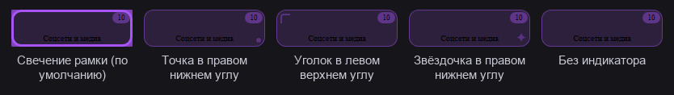
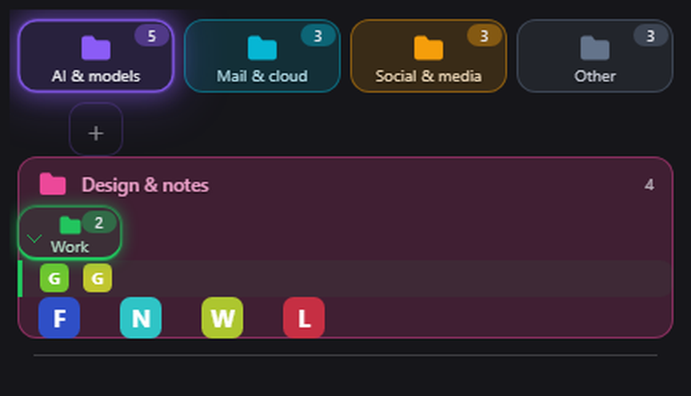
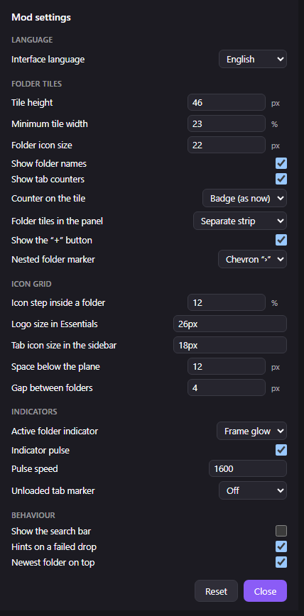

Вложенные папки
Перетащите плитку папки на другую — она вложится внутрь. Глубина не ограничена, вложенная папка помечена шевроном.
Мод для Zen Browser 1.24b и новее
Essentials Folders превращает сетку «Важных» (Essentials, он же pinboard) в цветные плитки-папки. Папки вкладываются друг в друга на любую глубину, всё перетаскивается мышью, есть поиск и свой диалог настроек из 21 параметра. Вкладки остаются обычными вкладками Zen — мод ничего не переносит и не удаляет.

Essentials Folders — мод для Zen Browser, который превращает сетку «Важных» (Essentials, он же pinboard) в плитки-папки. Каждая плитка показывает иконку, название, цвет и счётчик вкладок. Клик по плитке открывает папку, правый клик вызывает меню управления.
Открытая папка разворачивается широкой плоскостью своего цвета, и её плитки лежат внутри этой плоскости — отдельной «шапки» и дублирующей плитки нет. Несколько папок можно держать открытыми одновременно, самая свежая стоит выше остальных.
Перетащите плитку папки на другую — она вложится внутрь. Глубина не ограничена, вложенная папка помечена шевроном.
Папки меняются местами, плитки внутри папки переставляются, вкладка кидается в папку прямо из сайдбара. Переносится ровно та вкладка, которую тянули.
Строка над плитками ищет по названию папки и по домену. Esc или крестик сбрасывают поиск.
Свой диалог «Настройки мода»: вид плиток, сетка иконок, индикаторы и поведение. Значения применяются сразу, без кнопки «Сохранить».
Папка с текущей вкладкой помечается: свечением рамки, точкой, уголком или звёздочкой. Пульсацию можно выключить.
16 оттенков, пипетка, поле для кода #rrggbb и кнопка «Случайный». Цвет сразу виден на плитке и на шапке открытой папки.
Панель папок ограничена по высоте и прокручивается сама. Под ней остаётся обычный список вкладок Zen и группы вкладок.
Вкладки остаются обычными вкладками Zen: работают выгрузка, перезагрузка и перетаскивание. Папки живут в настройках браузера.




Папка хранит не вкладки, а правила адреса. Обычное правило — домен: github.com означает «все вкладки GitHub в этой папке». Когда вкладку перетаскивают из папки в папку, мод запоминает её точнее — по полному адресу.
| Правило | Что попадает в папку |
|---|---|
github.com | все вкладки GitHub |
github.com/owner/repo | репозиторий и его внутренние страницы |
github.com/ | только главная страница GitHub |
!github.com/owner/repo | ничего: вкладка исключена из папки |
Мод ставится за минуту: это готовые файлы, без сборки и без npm. Zen читает мод при старте, поэтому после установки его нужно перезапустить.
https://github.com/danonchek51/zen-essentials-foldersМожно и вручную: скопируйте theme.json, preferences.json, chrome.css и essentials-folders.uc.js в папку профиля <профиль Zen>\chrome\sine-mods\zen-essentials-folders\ и добавьте запись в mods.json. Перед правкой mods.json и prefs.js закройте Zen — он перезаписывает их при выходе.
You can also install manually: copy theme.json, preferences.json, chrome.css and essentials-folders.uc.js into <Zen profile>\chrome\sine-mods\zen-essentials-folders\ and add an entry to mods.json. Close Zen before editing mods.json and prefs.js — it rewrites them on exit.
Нет. Мод ничего не переносит и не удаляет: вкладки остаются обычными вкладками Zen со своими закладками и историей. В папку попадают вкладки по правилу адреса.
В настройках Zen, поэтому они переживают перезапуск и обновление браузера: префы zen.essentialsfolders.folders, .collapsed, .order и .settings.
Да. Мод использует публичные API Zen (gZenWorkspaces.getCurrentEssentialsContainer()) и CSS-класс .zen-essentials-container; наблюдение за DOM переподключается само.
Да. Мод не трогает вкладки и их данные, а только рисует плитки. Подтверждённая совместимость — мод Zen Tab Groups (oom333) с группами вкладок.
Удалите папку chrome\sine-mods\zen-essentials-folders в профиле Zen и её запись из mods.json, затем перезапустите Zen. Никакие вкладки при этом не пропадут.
Откройте about:support → «Папка профиля» и проверьте, что chrome\sine-mods\zen-essentials-folders\essentials-folders.uc.js на месте. Помогает перезагрузка Zen: Ctrl+Shift+R.
Essentials Folders is a Zen Browser mod that turns the Essentials (pinboard) grid into folder tiles. Folders nest inside each other to any depth, folders and tabs are rearranged by ordinary drag & drop, and the mod ships its own settings dialog with 21 options across four groups. Tabs stay ordinary Zen tabs — the mod never moves or deletes them, and folders live in the browser preferences.
First release: 1.1.0 (2026). Current version: 1.10.2, released 2026-11-09. Requires Zen
Browser 1.24b or newer. License: MIT. Install through the Sine mod manager or manually into
the Zen profile — theme.json, preferences.json,
chrome.css and essentials-folders.uc.js.